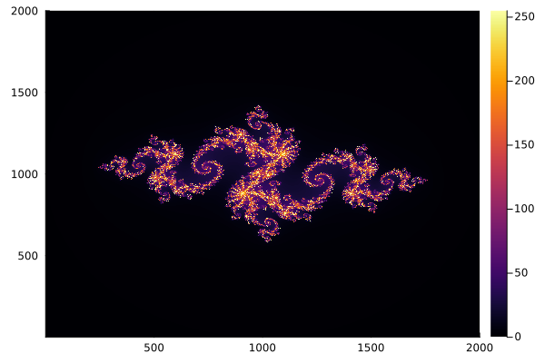

Julia Set
In this example, we will compute an image of the Julia set in parallel. We will explore the schedule and nchunks options that can be used to get load balancing.
The value of a single pixel of the Julia set, which corresponds to a point in the complex number plane, can be computed by the following iteration procedure.
function _compute_pixel(i, j, n; max_iter = 255, c = -0.79 + 0.15 * im)
x = -2.0 + (j - 1) * 4.0 / (n - 1)
y = -2.0 + (i - 1) * 4.0 / (n - 1)
z = x + y * im
iter = max_iter
for k in 1:max_iter
if abs2(z) > 4.0
iter = k - 1
break
end
z = z^2 + c
end
return iter
end_compute_pixel (generic function with 1 method)Note that the value of the pixel is the number of performed iterations for the corresponding complex input number. Hence, the computational workload is non-uniform.
Sequential computation
In our naive implementation, we just loop over the dimensions of the image matrix and call the pixel kernel above.
function compute_juliaset_sequential!(img)
N = size(img, 1)
for j in 1:N
for i in 1:N
img[i, j] = _compute_pixel(i, j, N)
end
end
return img
end
N = 2000
img = zeros(Int, N, N)
compute_juliaset_sequential!(img);Let's look at the result
using Plots
p = heatmap(img)
Parallelization
The Julia set computation above is a map! operation: We apply some function to each element of the array. Hence, we can use tmap! for parallelization. We use CartesianIndices to map between linear and two-dimensional cartesian indices.
using OhMyThreads: tmap!
function compute_juliaset_parallel!(img; kwargs...)
N = size(img, 1)
cart = CartesianIndices(img)
tmap!(img, eachindex(img); kwargs...) do idx
c = cart[idx]
_compute_pixel(c[1], c[2], N)
end
return img
end
# or alternatively
#
# function compute_juliaset_parallel!(img; kwargs...)
# N = size(img, 1)
# cart = CartesianIndices(img)
# @tasks for idx in eachindex(img)
# c = cart[idx]
# img[idx] = _compute_pixel(c[1], c[2], N)
# end
# return img
# end
N = 2000
img = zeros(Int, N, N)
compute_juliaset_parallel!(img);
p = heatmap(img)
Benchmark
Let's benchmark the variants above.
using BenchmarkTools
using Base.Threads: nthreads
N = 2000
img = zeros(Int, N, N)
@show nthreads()
@btime compute_juliaset_sequential!($img) samples=10 evals=3;
@btime compute_juliaset_parallel!($img) samples=10 evals=3;nthreads() = 10
131.295 ms (0 allocations: 0 bytes)
31.422 ms (68 allocations: 6.09 KiB)
As hoped, the parallel implementation is much faster!
Dynamic vs static scheduling
As stated above, the per-pixel computation is non-uniform. Hence, we do benefit from the load balancing of the default dynamic scheduler. The latter divides the overall workload into tasks that can then be dynamically distributed among threads to adjust the per-thread load. We can try to fine tune and improve the load balancing further by increasing the ntasks parameter of the scheduler, that is, creating more tasks with smaller per-task workload.
using OhMyThreads: DynamicScheduler
@btime compute_juliaset_parallel!($img; ntasks=N, scheduler=:dynamic) samples=10 evals=3; 17.438 ms (12018 allocations: 1.11 MiB)
Note that while this turns out to be a bit faster, it comes at the expense of much more allocations.
To quantify the impact of load balancing we can opt out of dynamic scheduling and use the StaticScheduler instead. The latter doesn't provide any form of load balancing.
using OhMyThreads: StaticScheduler
@btime compute_juliaset_parallel!($img; scheduler=:static) samples=10 evals=3; 30.097 ms (73 allocations: 6.23 KiB)
This page was generated using Literate.jl.